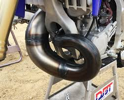
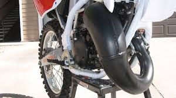

Comparing a yamaha yz250 2 stroke to a honda cr125/ yamaha yz125
A yamaha yz125 or honda cr125 is more for beginners that are fairly tall. A yamaha yz125 or honda cr125 is perfect for an older person to start riding as they are a good height, a good height would be 5’5 to 6’0 feet. The yz125/cr125 is a very light bike with a good amount of power, a fair amount of horsepower is anywhere from 25-35hp. A yz250 has about 50 hp stock, but most of the time if your getting a used bike they will have vforce 3 reeds or boyesen reeds which add quite a bit of horsepower. Sometimes you have an after market pipe, for example , fmf and pro circuit pipes which also add some horsepower. With a yz125 try to keep oem exhaust for your first 30-50 rides, if you want to upgrade your bike go for reeds and a new pipe, as you would need to rejet your carburetor if you put a pipe on. Similarities they are both the same height, they both have a similar frame sometimes the same frame. You can use the same handle bars for both a cr125/yz125 and yz250.
One major difference is the pipe, the picture on the left is a 125cc but if it is shorter than a full size bike it is a 85cc.. pipe and the one on the right is a 250 or 300 depending on the brand.
 I recommend if you've had years of experience on smaller bikes you might be able to move up to a 250. A yz 125 only weighs 195 pounds where the yz 250 weighs 215 both dry weighs. Both there rear tires are slightly different sizes with the 125 being the smaller size tire. The yz 250 will need a wider footprint in order to put the higher number of horsepower to the ground. In conclusion a yz 85 is a beginner bike, a yz125 is intermediate, and a yz 250 would be more pro level. Extreme would be the cr500 or a maico 700. Do not start on these bikes as they are dangerous to new riders.
By Derek Richardson